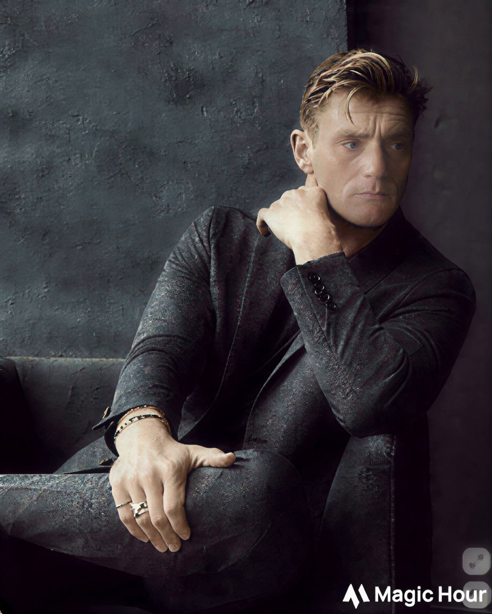

This is where almost everything I believe about this work was formed.
In 2009 I walked into The Cable Center in Denver and they asked if I could learn ColdFusion — an enterprise platform that was already considered legacy at the time. I said yes, built their entire website from scratch that year, and stayed for twelve years as their lead (and for most of that time, only) web and digital person.
No marketing team. No designers. No developers to hand things off to. Every decision — from information architecture to server maintenance — was mine. That kind of radical ownership changes how you think about quality and longevity.
Hundreds of hours of oral histories, Hall of Fame programs, and institutional memory existed in only one place. Bit by bit I reconstructed the cleanest copies I could find and created a verified master archive. Most people never knew how close we came to losing it.
When the technology died, important interactive exhibits died with it. I found ways to bring pieces of that experience back online safely. That work continues today.
Working with a small team, we built something visitors could walk through on a Meta Quest or via Steam — picking up artifacts and stepping into real 360° oral histories. It is still available and free more than a decade later.
View the VR Archive on SteamThe best digital work isn't flashy. It's the kind that still makes sense when the original team has moved on and the next person has to maintain it.
I learned to care more about the long-term health of an organization’s story than about looking impressive in the moment. That single lesson has guided almost every project since.
I still do the same work I’ve always done — strategic web design for organizations whose stories deserve to last. The difference now is that I have powerful new partners: Grok and Claude.
I use AI every day as a creative collaborator. It lets me explore more directions, write sharper copy, generate better visual concepts, and deliver higher-quality work in less time. The result is that I can take on the kind of thoughtful, mission-driven projects I care about without the old constraints of time and cost.
The craft hasn’t changed. The economics have.
I work best with museums, historical organizations, and purpose-driven groups who care about getting it right for the long haul.